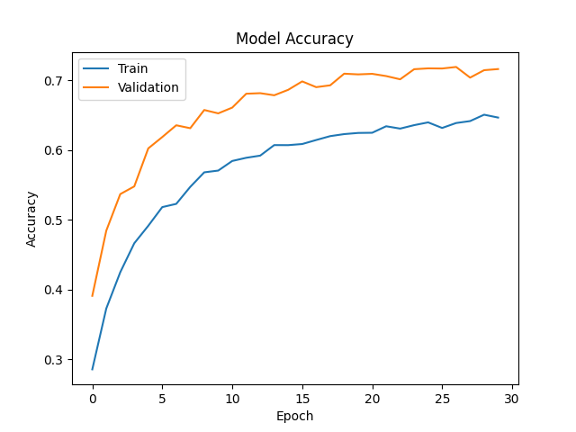
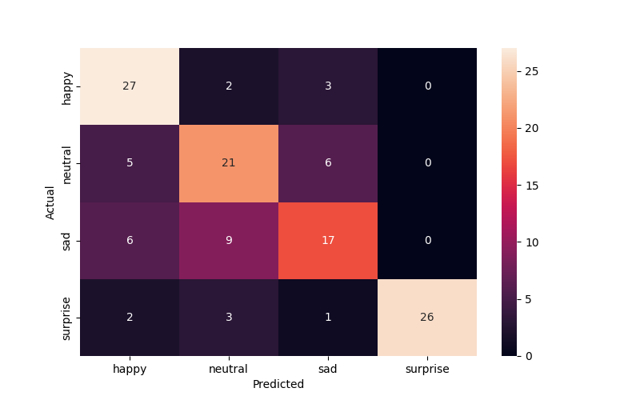
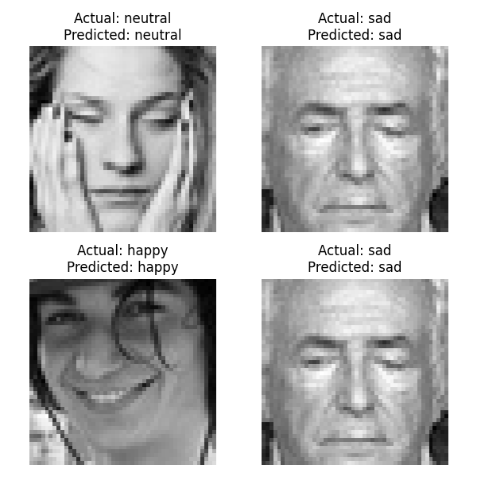

        <html>
        <head><title>Model Summary - 2024-04-10 00:28:49</title></head>
        <body>
        <h1>Model Summary</h1>
        <pre>Model: "sequential"
┏━━━━━━━━━━━━━━━━━━━━━━━━━━━━━━━━━━━━━━┳━━━━━━━━━━━━━━━━━━━━━━━━━━━━━┳━━━━━━━━━━━━━━━━━┓
┃ Layer (type)                         ┃ Output Shape                ┃         Param # ┃
┡━━━━━━━━━━━━━━━━━━━━━━━━━━━━━━━━━━━━━━╇━━━━━━━━━━━━━━━━━━━━━━━━━━━━━╇━━━━━━━━━━━━━━━━━┩
│ conv2d (Conv2D)                      │ (None, 48, 48, 64)          │             640 │
├──────────────────────────────────────┼─────────────────────────────┼─────────────────┤
│ max_pooling2d (MaxPooling2D)         │ (None, 24, 24, 64)          │               0 │
├──────────────────────────────────────┼─────────────────────────────┼─────────────────┤
│ dropout (Dropout)                    │ (None, 24, 24, 64)          │               0 │
├──────────────────────────────────────┼─────────────────────────────┼─────────────────┤
│ conv2d_1 (Conv2D)                    │ (None, 24, 24, 32)          │          18,464 │
├──────────────────────────────────────┼─────────────────────────────┼─────────────────┤
│ max_pooling2d_1 (MaxPooling2D)       │ (None, 12, 12, 32)          │               0 │
├──────────────────────────────────────┼─────────────────────────────┼─────────────────┤
│ dropout_1 (Dropout)                  │ (None, 12, 12, 32)          │               0 │
├──────────────────────────────────────┼─────────────────────────────┼─────────────────┤
│ conv2d_2 (Conv2D)                    │ (None, 12, 12, 32)          │           9,248 │
├──────────────────────────────────────┼─────────────────────────────┼─────────────────┤
│ max_pooling2d_2 (MaxPooling2D)       │ (None, 6, 6, 32)            │               0 │
├──────────────────────────────────────┼─────────────────────────────┼─────────────────┤
│ dropout_2 (Dropout)                  │ (None, 6, 6, 32)            │               0 │
├──────────────────────────────────────┼─────────────────────────────┼─────────────────┤
│ flatten (Flatten)                    │ (None, 1152)                │               0 │
├──────────────────────────────────────┼─────────────────────────────┼─────────────────┤
│ dense (Dense)                        │ (None, 512)                 │         590,336 │
├──────────────────────────────────────┼─────────────────────────────┼─────────────────┤
│ dense_1 (Dense)                      │ (None, 64)                  │          32,832 │
├──────────────────────────────────────┼─────────────────────────────┼─────────────────┤
│ dense_2 (Dense)                      │ (None, 4)                   │             260 │
└──────────────────────────────────────┴─────────────────────────────┴─────────────────┘
 Total params: 651,780 (2.49 MB)
 Trainable params: 651,780 (2.49 MB)
 Non-trainable params: 0 (0.00 B)
</pre>
        <h2>Test Accuracy</h2>
        <p>
1/4 ━━━━━━━━━━━━━━━━━━━━ 0s 21ms/step - accuracy: 0.8438 - loss: 0.4175
4/4 ━━━━━━━━━━━━━━━━━━━━ 0s 7ms/step - accuracy: 0.7385 - loss: 0.6248 

1/4 ━━━━━━━━━━━━━━━━━━━━ 0s 69ms/step
4/4 ━━━━━━━━━━━━━━━━━━━━ 0s 8ms/step 
</p>
        <h2>Accuracy Plot</h2>
        
        <h2>Classification Report</h2>
        <pre>              precision    recall  f1-score   support

       happy       0.68      0.84      0.75        32
     neutral       0.60      0.66      0.63        32
         sad       0.63      0.53      0.58        32
    surprise       1.00      0.81      0.90        32

    accuracy                           0.71       128
   macro avg       0.73      0.71      0.71       128
weighted avg       0.73      0.71      0.71       128

</pre>
        <h2>History</h2>
        <pre>Epoch 1: accuracy: 0.2859, loss: 1.3728, val_accuracy: 0.3912, val_loss: 1.3236, learning_rate: 0.0010
Epoch 2: accuracy: 0.3731, loss: 1.2921, val_accuracy: 0.4846, val_loss: 1.1792, learning_rate: 0.0010
Epoch 3: accuracy: 0.4251, loss: 1.2197, val_accuracy: 0.5371, val_loss: 1.0859, learning_rate: 0.0010
Epoch 4: accuracy: 0.4666, loss: 1.1678, val_accuracy: 0.5481, val_loss: 1.0262, learning_rate: 0.0010
Epoch 5: accuracy: 0.4916, loss: 1.1188, val_accuracy: 0.6026, val_loss: 0.9457, learning_rate: 0.0010
Epoch 6: accuracy: 0.5184, loss: 1.0811, val_accuracy: 0.6188, val_loss: 0.9032, learning_rate: 0.0010
Epoch 7: accuracy: 0.5231, loss: 1.0569, val_accuracy: 0.6357, val_loss: 0.8744, learning_rate: 0.0010
Epoch 8: accuracy: 0.5474, loss: 1.0295, val_accuracy: 0.6315, val_loss: 0.8705, learning_rate: 0.0010
Epoch 9: accuracy: 0.5683, loss: 1.0016, val_accuracy: 0.6576, val_loss: 0.8242, learning_rate: 0.0010
Epoch 10: accuracy: 0.5708, loss: 0.9828, val_accuracy: 0.6528, val_loss: 0.8286, learning_rate: 0.0010
Epoch 11: accuracy: 0.5846, loss: 0.9660, val_accuracy: 0.6610, val_loss: 0.8194, learning_rate: 0.0010
Epoch 12: accuracy: 0.5891, loss: 0.9556, val_accuracy: 0.6809, val_loss: 0.7731, learning_rate: 0.0010
Epoch 13: accuracy: 0.5922, loss: 0.9376, val_accuracy: 0.6817, val_loss: 0.7815, learning_rate: 0.0010
Epoch 14: accuracy: 0.6073, loss: 0.9323, val_accuracy: 0.6787, val_loss: 0.7619, learning_rate: 0.0010
Epoch 15: accuracy: 0.6073, loss: 0.9124, val_accuracy: 0.6866, val_loss: 0.7524, learning_rate: 0.0010
Epoch 16: accuracy: 0.6088, loss: 0.9127, val_accuracy: 0.6986, val_loss: 0.7299, learning_rate: 0.0010
Epoch 17: accuracy: 0.6146, loss: 0.9099, val_accuracy: 0.6904, val_loss: 0.7500, learning_rate: 0.0010
Epoch 18: accuracy: 0.6202, loss: 0.8883, val_accuracy: 0.6930, val_loss: 0.7586, learning_rate: 0.0010
Epoch 19: accuracy: 0.6231, loss: 0.8877, val_accuracy: 0.7097, val_loss: 0.7182, learning_rate: 0.0010
Epoch 20: accuracy: 0.6247, loss: 0.8874, val_accuracy: 0.7087, val_loss: 0.7260, learning_rate: 0.0010
Epoch 21: accuracy: 0.6250, loss: 0.8855, val_accuracy: 0.7095, val_loss: 0.7154, learning_rate: 0.0010
Epoch 22: accuracy: 0.6343, loss: 0.8720, val_accuracy: 0.7062, val_loss: 0.7217, learning_rate: 0.0010
Epoch 23: accuracy: 0.6309, loss: 0.8671, val_accuracy: 0.7016, val_loss: 0.7282, learning_rate: 0.0010
Epoch 24: accuracy: 0.6359, loss: 0.8610, val_accuracy: 0.7161, val_loss: 0.7005, learning_rate: 0.0010
Epoch 25: accuracy: 0.6399, loss: 0.8592, val_accuracy: 0.7173, val_loss: 0.6979, learning_rate: 0.0010
Epoch 26: accuracy: 0.6319, loss: 0.8575, val_accuracy: 0.7171, val_loss: 0.6899, learning_rate: 0.0010
Epoch 27: accuracy: 0.6390, loss: 0.8573, val_accuracy: 0.7193, val_loss: 0.6967, learning_rate: 0.0010
Epoch 28: accuracy: 0.6417, loss: 0.8451, val_accuracy: 0.7040, val_loss: 0.7180, learning_rate: 0.0010
Epoch 29: accuracy: 0.6509, loss: 0.8386, val_accuracy: 0.7147, val_loss: 0.6940, learning_rate: 0.0010
Epoch 30: accuracy: 0.6468, loss: 0.8390, val_accuracy: 0.7163, val_loss: 0.6967, learning_rate: 0.0010
</pre>
        <h2>Confusion Matrix</h2>
        
        <h2>Predicted Images</h2>
        
        </body>
        </html>
        